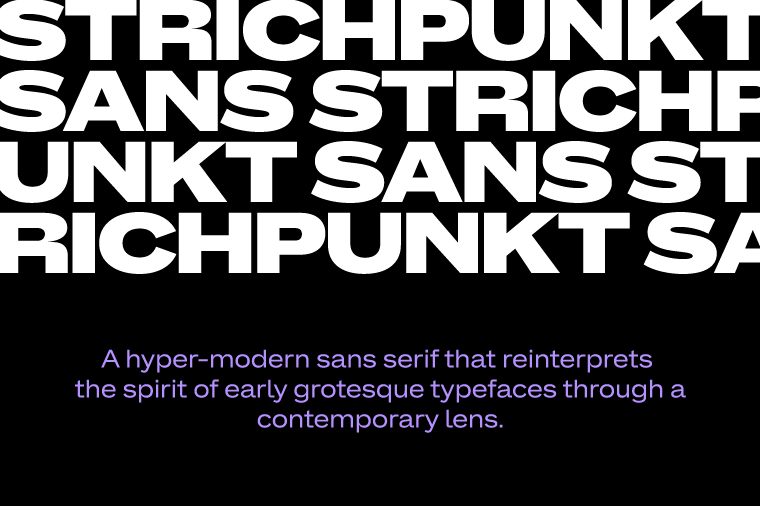
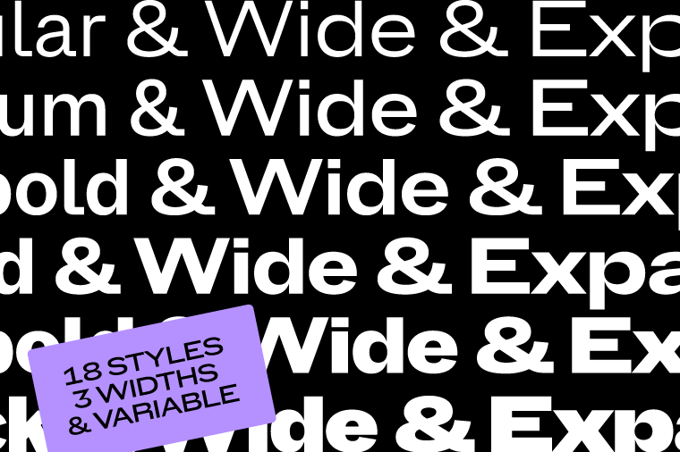
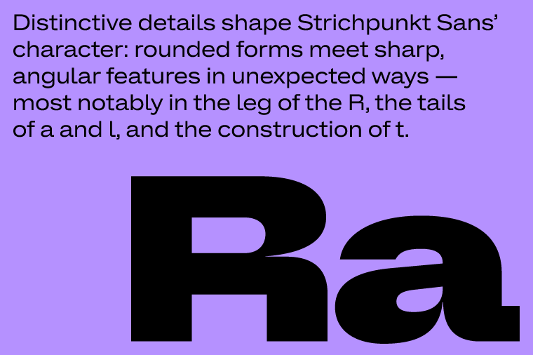
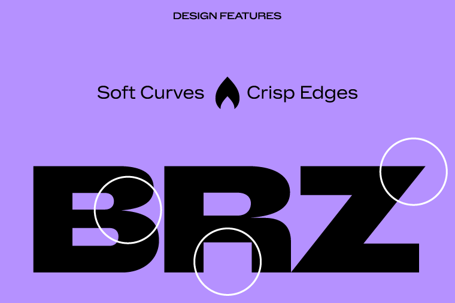
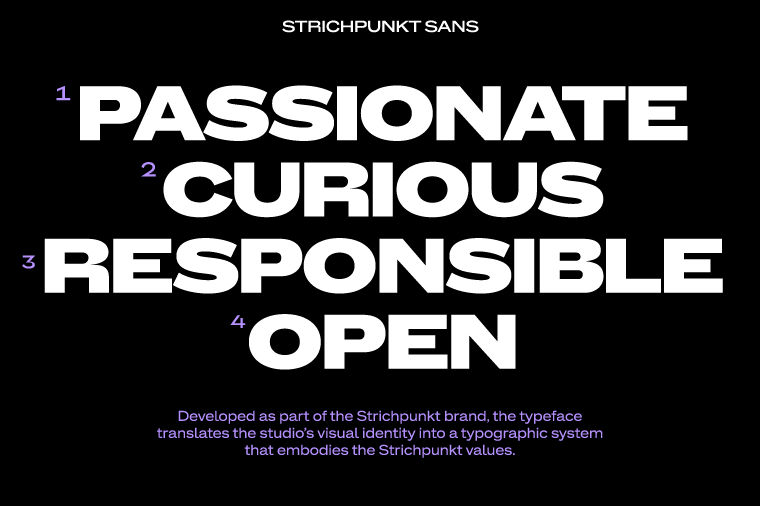
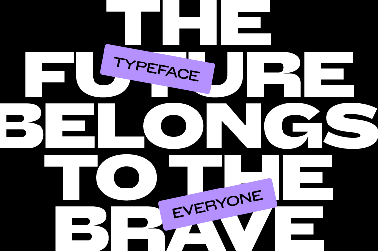
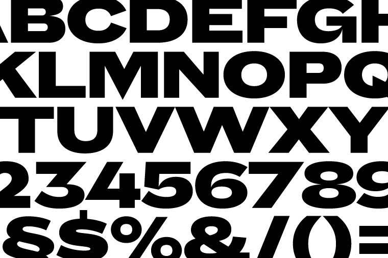

Strichpunkt Sans is a hyper-modern sans serif that reinterprets the spirit of early grotesque typefaces through a contemporary lens. The family comprises eighteen styles across three widths (Normal, Wide, and Expanded) ranging from Regular to Black. While the Expanded styles make a confident statement in headlines, the Normal width is optimized for continuous reading and editorial clarity. All styles support Latin Extended and are available in static formats as well as a variable font.
To contribute, see github.com/strichpunkt-design/Strichpunkt_Sans.



Distinctive details shape its character: rounded forms meet sharp, angular features in unexpected ways: most notably in the leg of the R, the tails of a and l, and the construction of t.

The sharply tapered joins of letters such as a, n, b, d and q create a dynamic interplay between soft curves and crisp edges. This balance between tradition and forward-looking expression gives the typeface both authority and warmth.

Developed as part of the Strichpunkt brand, the typeface translates the studio’s visual identity into a typographic system that embodies the Strichpunkt values: Passionate, Curious, Responsible, Open.

Releasing the typeface as an open-source Google font family reflects a shared commitment to making high-quality contemporary typography accessible to everyone.
